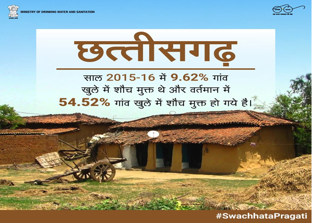
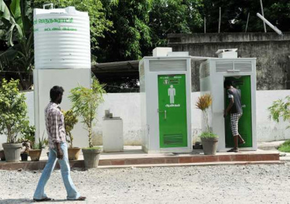
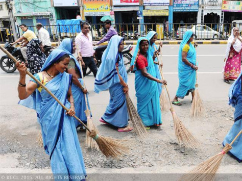

Swachh Bharat Mission in Rural Areas
The Swachh Bharat Mission in Rural Areas is by and large undertaken by Ministry of Drinking Water and Sanitation. An App called SWACHH APP launched on 22nd December 2015 for monitoring the progress of the Swachh Bharat Mission in rural areas. 386.83 lakhs new toilets have been built since commencement of Swachh Bharat Abhiyan. The noticeable and appreciable work is done in most backward regions of backward states like in Chhattisgarh, Bihar, Madhya Pradesh, and Orissa etc. For Instance there were only 9.62% villages of Chhattisgarh free from open defecation. But now under Swachh Bharat Abhiyan the work on making rural areas (villages) free from open defecation progressed tremendously and at present 54.52% villages are free from open defecation.
The ministry along with its bodies working continuously to make people aware of the issues particularly health related diseases caused by the unhygienic habits and non-cleanliness in their surroundings. Several new initiatives has been undertaken by District Authorities and also by Gram Panchayat. Some of the Panchayats made it mandatory in villages to dump waste in dumping pits and also use toilets at their homes. Twin pit system has been adopted as a model for toilet pits. The schools and other village offices are advised to have proper facilities for workers especially for women. Members of Parliament are asked to adopt one village and make it clean and also make it open defecation free. Several loans and other facilities are offered in rural areas to help natives to build toilets for daily use. |
 |
A lot of loan is advanced by banks in this purpose as ordered by Ministry of Finance. Special attention has been given to schools in rural areas where a lot of Girl students opt out of schools because of no toilet facilities. It is also one of the major concern of the newly married bride. Even in some areas the initiatives has been taken by these newly married brides to take the responsibility of building a toilet and use it regularly. In some areas the brides even refused to go to their husband’s house if there was no toilet. There are a lot of similar stories like this and they successfully get it done.
In terms of sanitation, the Northeast States and Southern States of the Country does better than the Northern, Central and Western parts of the Country. With Kerala being at no.1 in terms of toilet facilities and Jharkhand and Odisha scoring worst, Bihar scored worst in terms of Drinking water facilities and Himachal Pradesh scoring better than all states. But still the Data given by Economic Survey reveals that more than half of the population of the country doesn’t have access to better sanitation and drinking water facilities. So there is a need to do more in order to realize the dream envisaged through Swachh Bharat Abhiyan otherwise it will remain a mere dream and a remote dream to come true.
|  |  |
State-wise Distribution of Households with Access to Amenities 2011 (in per cent)
| States | Drinking Water Faclities | Latrine Facilities | |
|---|---|---|---|
| Tap Water | Within the premises | Within the premises | |
| Andhra Pradesh | 69.9 | 43.2 | 49.6 |
| Arunachal Pradesh | 65.5 | 41.1 | 62.0 |
| Assam | 10.5 | 54.8 | 64.9 |
| Bihar | 4.4 | 50.1 | 23.1 |
| Chhattisgarh | 20.7 | 19.0 | 24.6 |
| Goa | 85.4 | 79.7 | 79.7 |
| Gujarat | 69.0 | 64.0 | 57.4 |
| Haryana | 68.8 | 66.5 | 68.6 |
| Himachal Pradesh | 89.5 | 55.5 | 69.1 |
| Jammu & Kashmir | 63.9 | 48.2 | 51.2 |
| Jharkhand | 12.9 | 23.2 | 22.0 |
| Karnataka | 66.1 | 44.5 | 51.2 |
| Kerala | 29.3 | 77.7 | 95.2 |
| Madhya Pradesh | 23.4 | 23.9 | 28.8 |
| Maharashtra | 67.9 | 59.4 | 53.1 |
| Manipur | 38.6 | 16.1 | 89.3 |
| Meghalaya | 39.3 | 24.1 | 62.9 |
| Mizoram | 58.7 | 31.2 | 91.9 |
| Nagaland | 47.2 | 29.3 | 76.5 |
| Odisha | 13.8 | 22.4 | 22.0 |
| Punjab | 51.0 | 85.9 | 79.3 |
| Rajasthan | 40.6 | 35.0 | 35.0 |
| Sikkim | 85.3 | 52.6 | 87.2 |
| Tamil Nadu | 79.8 | 34.9 | 48.3 |
| Tripura | 33.2 | 37.1 | 86.0 |
| Uttar Pradesh | 27.3 | 51.9 | 35.7 |
| Uttarakhand | 68.2 | 58.3 | 65.8 |
| West Bengal | 25.4 | 38.6 | 58.9 |
| INDIA | 43.5 | 46.6 | 46.9 |